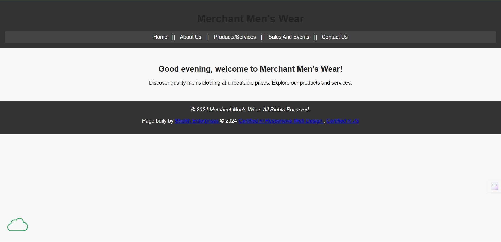

Peer Review - Ibad Sheikh

Merchant Men's Wear
- General Submission
- Does the page link directly to the review or provide a primary page with links? Yes
- Are file and folder names free of spaces and uppercase letters (e.g., scripts, images)? Yes
- Design
- Is there sufficient contrast and appropriate font sizing for readability? No, h1 is hard to read against the dark background
- Are consistent site colors and fonts applied via a standard `.css` file? Yes
- Are CRAP (Contrast, Repetition, Alignment, Proximity) principles followed? Almost, See above
- Main Content
- Does the main content start with the page name in an `h2`? Yes
- Footer
- Does the footer include a menu linking to the user’s pages? Yes
- Are HTML and CSS validation tools (e.g., Accumulus) included? Yes
- Feedback
- Change the h1 to make it more easily readable. Same thing with the links in the footer.
- Maybe change the white to something a little less harsh
- Overall the site is good and only needs some small improvements